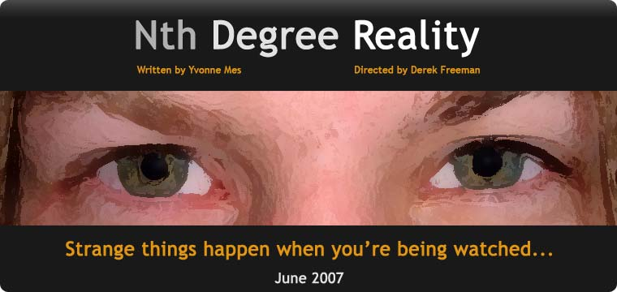

24.03.2007 - Closing night for "Cruisin Calypso"
18.03.2007 - Auditions for "Nth Degree Reality"
14.04.2007 - "Hercules Returns" movie night
27.05.2007 - Auditions for "The Wiz"
MITS is an amateur theatrical group based in Mount Isa, with members with a wide range of experience and personality. Producing several plays a year, MITS is the only place in Mount Isa where you can entirely indulge in the theatre atmosphere. Anyone with a flair for the theatrical, whether that be on stage or behind it, can become a member.